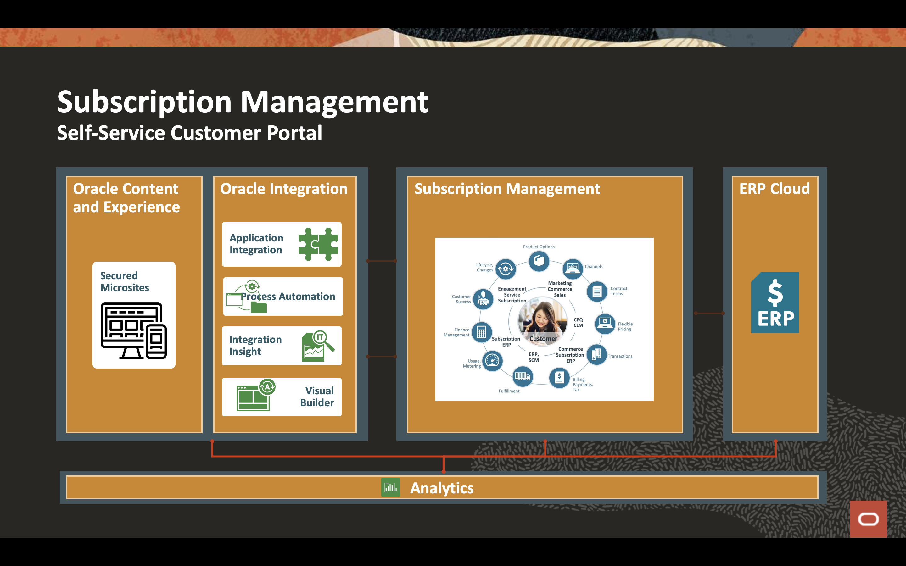

Oracle Integration - Get Started
Oracle Integration - Get Started

Background
In these hands-on labs, you'll be working with two of the key capabilities of Oracle Integration; application integration and process automation.
The labs are broken into two parts. Part one will cover application integration where you'll create an integration to update subscription usage data in Oracle Engagement Cloud. Part two will cover process automation where you'll create a Process App to automate the self service collection of usage data and update that subscription usage data in Oracle Engagement Cloud Subscription Management. While you will benefit from completing both labs in order, the labs are designed such that you can work on them independently.
The business scenario is to create a self-service Subscription Management application that allows subscribers of a good or service to self report subscription usage. Once subscription usage data is reported, the application will automate the review and approval of that data, and if approved, automate updating Oracle Engagement Cloud Subscription Management with the usage data. This scenario represents a common business process where requests are made, reviewed, approved, and result in updates to an enterprise application. Digitizing and automating these types of business process can yield significant benefits.

Labs
Access to Oracle Integration is secured through Oracle Identity Cloud Service. Users may be granted access to all the Oracle Integration environments in a cloud tenancy, or they may be restricted to specific environments. They may be assigned different roles in each environment.
Safe Harbor
This is intended to outline our general product direction. It is intended for information purposes only, and may not be incorporated into any contract. It is not a commitment to deliver any material, code, or functionality, and should not be relied upon in making purchasing decisions. The development, release, timing, and pricing of any features or functionality described for Oracle’s products may change and remains at the sole discretion of Oracle Corporation.
Statements in this presentation relating to Oracle’s future plans, expectations, beliefs, intentions and prospects are “forward-looking statements” and are subject to material risks and uncertainties. A detailed discussion of these factors and other risks that affect our business is contained in Oracle’s Securities and Exchange Commission (SEC) filings, including our most recent reports on Form 10-K and Form 10-Q under the heading “Risk Factors.” These filings are available on the SEC’s website or on Oracle’s website at http://www.oracle.com/investor. All information in this presentation is current as of September 2019 and Oracle undertakes no duty to update any statement in light of new information or future events.